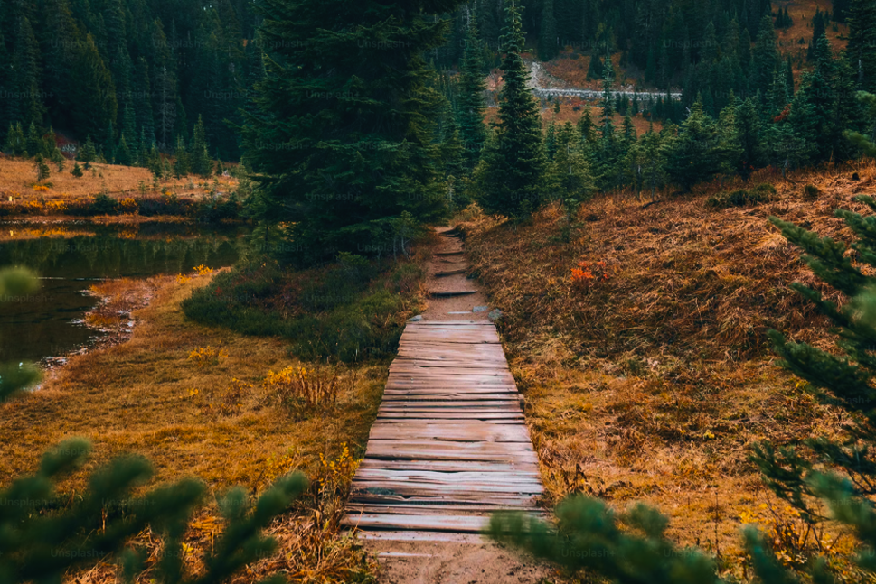

Birdwatching al Gran Paradiso
Il Parco Nazionale del Gran Paradiso è un paradiso per gli amanti del birdwatching. Qui puoi osservare aquile reali, gipeti, e rapaci alpini che solcano i cieli, oltre a specie migratorie rare. I punti di osservazione si trovano lungo i sentieri più tranquilli del parco.

Trekkings sull'Alta Via delle Dolomiti
L'Alta Via delle Dolomiti è una rete di sentieri spettacolari che attraversano cime, vallate e paesaggi mozzafiato. Ogni tappa collega rifugi alpini, offrendo un'esperienza unica tra natura incontaminata, flora endemica e panorami patrimonio UNESCO.
Percorsi naturalistici nel Pollino:
Nel Parco Nazionale del Pollino, i percorsi naturalistici conducono tra boschi di faggi, distese di pini loricati e gole profonde. Ideali per gli escursionisti, i sentieri offrono la possibilità di incontrare lupi appenninici e cervi, oltre a scoprire panorami straordinari.